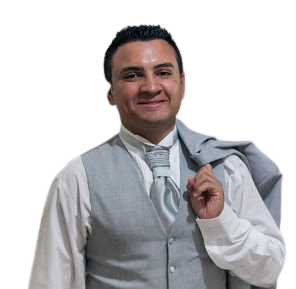
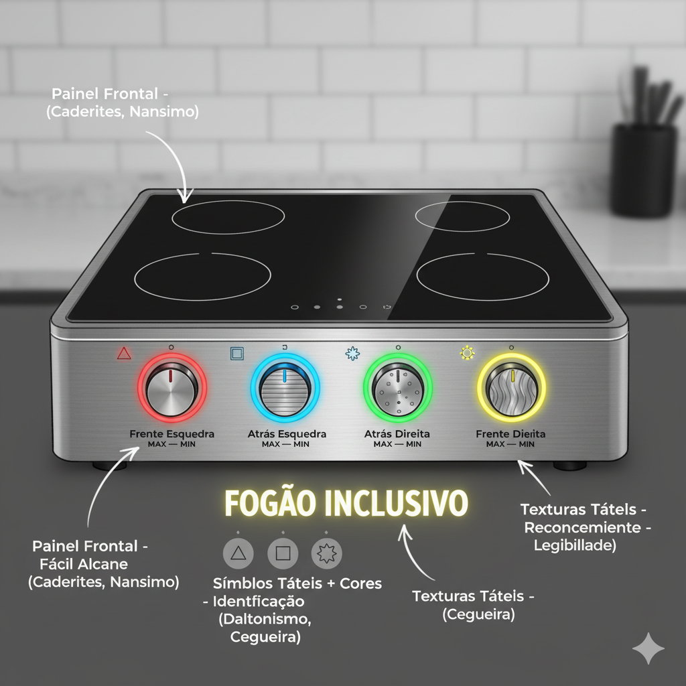

Designer UX/UI especializado em acessibilidade e design inclusivo. Acredito que a tecnologia deve ser uma ponte que conecta e capacita todas as pessoas, independentemente de suas habilidades. Este projeto representa minha visão de como objetos cotidianos podem ser repensados para serem verdadeiramente empáticos e seguros.

A nova interface foi desenvolvida seguindo os princípios do Design Universal, priorizando a acessibilidade sensorial múltipla e a segurança absoluta. O conceito central é criar uma experiência de uso que seja intuitiva, segura e empática para todas as pessoas, independentemente de suas habilidades físicas ou cognitivas.
Feedback sonoro para cada ação, controles com texturas diferenciadas, alto contraste visual e compatibilidade total com leitores de tela.
LEDs de status com cores únicas, feedback visual intenso com padrões piscantes e vibração nos controles principais.
Sistema de identificação por formas geométricas além das cores, padrões textuais claros e símbolos universais.
Controles frontais em altura acessível (75-85cm), espaço livre para aproximação da cadeira e alcance otimizado para todos os comandos.
Painel de controle com altura ajustável (65-95cm), botões grandes (6cm de diâmetro) e posicionamento ergonômico flexível.
Interface simplificada, instruções por voz passo a passo, símbolos universais e feedback claro para cada ação.
Cores: Sistema único por boca - Verde (traseira esquerda), Azul (traseira direita), Vermelho (frontal esquerda), Amarelo (frontal direita). Estas cores foram escolhidas por serem facilmente distinguíveis mesmo por pessoas com daltonismo e terem significados universais de segurança.
Formas: Controles circulares de 6cm de diâmetro, facilitando a localização e acionamento. Formato universal que não depende de orientação específica para uso.
Sons: Feedback sonoro específico para cada ação - tons graves para desligar, agudos para ligar, e melodias para confirmação. Sistema compatível com síntese de voz em português claro.
Texturas: Superfícies rugosas para controles de liga/desliga, lisas para ajustes de temperatura, e sulcos direcionais para orientação. Todas as texturas seguem padrões táteis universais estabelecidos pela ABNT.
Este manual inclui instruções em áudio e vídeo para máxima acessibilidade. Todos os vídeos possuem legendas em português e interpretação em Libras.
Manual completo narrado em português claro, com instruções passo a passo para uso seguro.
Demonstração visual completa com legendas e interpretação em Libras disponível.
🟢 Boca Verde (B1): Traseira esquerda - controle com textura rugosa
🔵 Boca Azul (B2): Traseira direita - controle com sulcos horizontais
🔴 Boca Vermelha (B3): Frontal esquerda - controle com pontos em relevo
🟡 Boca Amarela (B4): Frontal direita - controle com sulcos verticais
Cada controle emite um som único quando tocado para identificação por pessoas com deficiência visual.